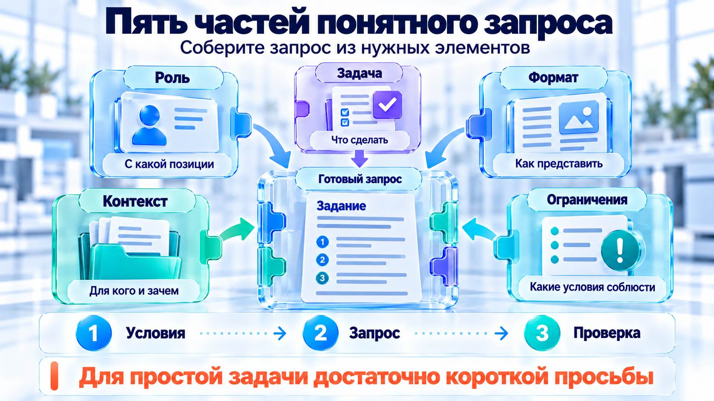
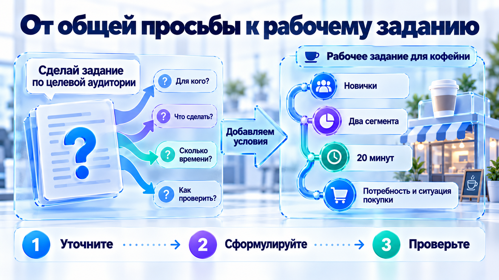
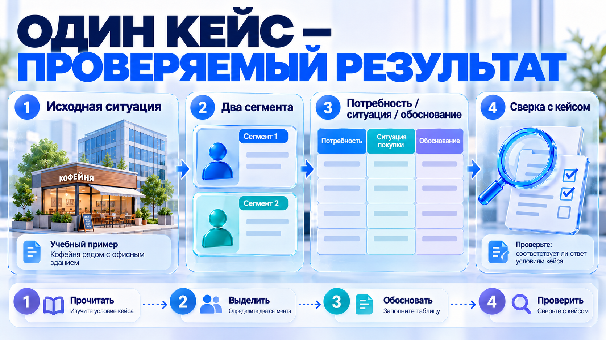

Базовый структурированный промпт
Пять элементов превращают общую просьбу в понятное задание.

Промпт · Пять элементов · проверка информации
Роль: Ты – методист, специализирующийся на дистанционном обучении взрослых. Задача: Разработай практическое упражнение на тему «Проверка достоверности информации в интернете». Контекст: Участники – преподаватели гуманитарных дисциплин, имеющие базовые навыки работы с интернетом. Занятие проходит дистанционно, продолжительность упражнения – 20 минут. Формат: Представь результат в виде пошаговой инструкции с описанием действий участников, вопросами для обсуждения и критериями оценки. Ограничения: Не используй платные сервисы, не предлагай установку программ. Упражнение должно выполняться индивидуально и иметь проверяемый результат.
Текст лекции
1.Роль задаёт профессиональный взгляд: например, методист дистанционного обучения. Это не значит, что перед вами автоматически появляется настоящий специалист, обладающий всеми необходимыми знаниями и навыками. Но указание роли помогает задать ракурс, с которого ИИ будет рассматривать задачу.
Например, один и тот же текст корректор, SMM-специалист и методист оценят совершенно по-разному. Корректор обратит внимание на орфографию, пунктуацию и стилистические ошибки. SMM-специалист посмотрит, насколько текст привлекает внимание аудитории, удерживает интерес и побуждает к действию. А методист оценит, насколько материал понятен обучающимся, логично структурирован и помогает достичь образовательных целей.
Таким образом, роль не гарантирует экспертности ИИ, но помогает направить его внимание на те аспекты задачи, которые важны именно вам.
2. Задача – что именно нужно сделать
Задача называет конкретное действие, которое должен выполнить ИИ: разработать упражнение, проверить инструкцию, объяснить сложную тему, составить тест или предложить структуру занятия.
Чем точнее сформулирована задача, тем выше вероятность получить полезный результат. Например, запрос «Помоги подготовиться к занятию» оставляет слишком много вариантов интерпретации. ИИ может предложить план лекции, список литературы, методические рекомендации или даже советы по организации рабочего времени.
Совсем другое дело, если написать: «Разработай пять практических заданий для закрепления темы "Критическое мышление и проверка информации"». Теперь ИИ понимает, какое действие нужно выполнить и на какой результат ориентироваться.
Таким образом, задача отвечает на вопрос «Что нужно сделать?». Важно формулировать её через конкретное действие, а не просто обозначать тему разговора.
3. Контекст – для кого и в каких условиях
Контекст описывает обстоятельства, в которых будет использоваться результат: кто ваши слушатели, каков уровень их подготовки, сколько времени отведено на занятие, какие знания у них уже есть и каких образовательных результатов необходимо достичь.
Например, задача «Объясни принцип работы искусственного интеллекта» может привести к совершенно разным ответам. Для школьников ИИ, вероятно, предложит простые сравнения и жизненные примеры. Для студентов технического направления – объяснение с использованием математических понятий. А для преподавателей гуманитарных дисциплин полезнее будет рассмотреть принцип работы ИИ через знакомые им задачи: подготовку учебных материалов, анализ текстов и проверку студенческих работ.
Контекст также помогает учитывать реальные условия работы. Одно дело – разработать упражнение для очного занятия в небольшой группе, другое – для дистанционного обучения, когда слушатели подключаются с разных устройств и имеют ограниченные возможности взаимодействия.
Таким образом, контекст отвечает на вопросы «Для кого?», «При каких условиях?» и «С какой целью?». Именно он помогает превратить универсальный ответ в решение, подходящее для конкретной образовательной ситуации.
4. Формат – в каком виде представить результат
Формат определяет, как должен выглядеть готовый ответ: связный текст, таблица, пошаговая инструкция, список вопросов, сценарий занятия, тест или структура презентации.
Например, вы просите ИИ объяснить различия между очным и дистанционным обучением. Без указания формата он, скорее всего, подготовит обычный текст с несколькими абзацами. Но если вам необходимо показать эти различия студентам на экране, гораздо удобнее получить сравнительную таблицу с критериями: взаимодействие с преподавателем, организация самостоятельной работы, способы контроля знаний и используемые технологии.
А если вы готовите методические рекомендации для коллег, полезнее будет запросить пошаговую инструкцию с примерами и типичными ошибками.
При этом формат может включать не только способ представления информации, но и её структуру, объём и степень детализации. Например: «Представь результат в виде таблицы из четырёх столбцов: этап занятия, действия преподавателя, действия студентов, ожидаемый результат».
Таким образом, формат отвечает на вопрос «Как должен выглядеть результат?». Правильно выбранный формат сокращает время на последующее редактирование и позволяет практически сразу использовать ответ в работе.
5. Ограничения – что необходимо учесть и чего следует избегать
Ограничения задают границы, в пределах которых ИИ должен выполнять задачу. Они помогают указать, что необходимо сохранить, какие требования обязательно соблюсти и каких решений следует избегать.
Например, преподаватель просит: «Разработай практическое занятие по медиаграмотности». ИИ может предложить интересные групповые упражнения, работу с видеоматериалами и обсуждение новостей. Но что, если занятие проводится дистанционно, у слушателей нет возможности работать в группах, а на выполнение упражнения отведено всего 15 минут?
В таком случае стоит сразу обозначить ограничения: «Задание должно выполняться индивидуально, занимать не более 15 минут, не требовать установки дополнительных программ и предполагать проверку результата преподавателем».
Ограничения особенно важны при работе с готовыми материалами. Например, если вы просите переработать текст лекции, можно указать: «Сохрани научную терминологию, основные положения и авторскую логику изложения. Не добавляй неподтверждённые факты и не сокращай примеры».
При этом ограничения не обязательно должны состоять из запретов. Они могут задавать и обязательные требования: использовать только предоставленные источники, учитывать определённую возрастную группу, соблюдать заданный объём или включать примеры из профессиональной практики слушателей.
Таким образом, ограничения отвечают на вопрос «Какие условия обязательно соблюсти?». Они не просто сужают возможности ИИ, а помогают избежать неподходящих решений и получить результат, который соответствует реальным требованиям преподавателя.


Промпт · Самостоятельное задание · кейс кофейни
Ты – методист дистанционного обучения взрослых. Разработай самостоятельное задание по теме «Целевая аудитория» для начинающих слушателей курса интернет-маркетинга. Они уже знают, что такое товар и потребность, но ещё не проводили исследования покупателей. Учебный результат: слушатель сможет выделить два сегмента аудитории и обосновать их различия. Используй учебный пример кофейни рядом с офисным центром. Придумай короткое описание ситуации и явно обозначь, что сведения вымышлены. Выполнение должно занимать около 20 минут. Работа индивидуальная, без регистрации в дополнительных сервисах. Дай исходную ситуацию, инструкцию по шагам, шаблон ответа и три понятных критерия самопроверки. Слушатель должен справиться без устного пояснения преподавателя. Не требуй реальных продаж или недоступной статистики.
Проверяет преподаватель. Есть ли данные для задания, выполнимо ли оно за отведённое время и можно ли проверить результат. Для простой правки достаточно короткой просьбы.